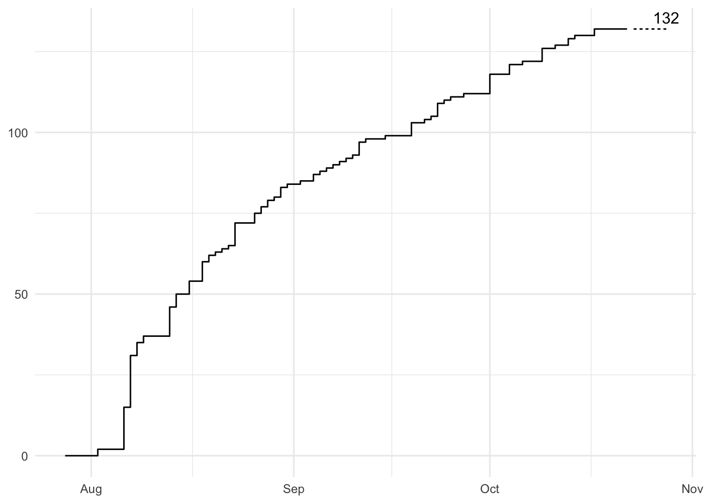

4 Teams
There are 111 active teams!
Here is the cumulative sum of created teams (as of Oct 01, 2024):
team_adventurous_ostrich
Description
We are a group of young researchers in the field of air traffic management with year of experience in data analysis and operational indicators
Rationale for participation
We find this challenge interesting both from a technical and operational point of view. We believe it may help to improve the estimations of the negative impact of aviation on the environment, providing a basis to find new tackle the problem
team_affectionate_bridge
Description
just myself
Rationale for participation
I’ve always been an aviation fan, and currently work in data analytics, but I’ve never had much opportunity to combine the two. I did use OpenSky Network a few times and blogged about it: it is a fantastic resource!
team_affectionate_whistle
Description
We are a group of aviation data science enthusiasts hailing from Hong Kong. Our team primarily consists of current and former members of the OCTAD Lab in the Department of Mechanical and Aerospace Engineering at the Hong Kong University of Science and Technology (HKUST)
Rationale for participation
Driven by curiosity and a shared passion for pushing the boundaries of aviation technology, we are participating in this competition to challenge ourselves to develop creative solutions that could potentially reshape the future of aviation
team_amazing_forest
Description
Professionally, I am a Data Scientist for a large social media business. Personally, I am a frequent blogger on analytics and sports topics at conormclaughlin.net
Rationale for participation
Life-long interest in aviation, academic and commercial experience building machine learning models, prior history working with OpenSky APIs to implement personal projects
team_amiable_garden
Description
I play with data as a hobby
Rationale for participation
A plane just flew over my house!
team_athletic_glacier
Description
I am a former airline pilot, current engineer and aviation enthusiast with an interest in data science and ML
Rationale for participation
I would like to participate in advancing green aviation
team_bold_dinosaur
Description
an aviation enthusiast with a deep passion for both aviation and Industry 4.0 landscape
Rationale for participation
be part of a more sustainable future for the industry, combining my passion for aviation with my experience in data science. It also resonates with my core belief that data-driven innovation should play an important role in increasing efficiency and reducing aviation’s environmental footprint
team_brave_pillow
Description
TU Delft PhD student
Rationale for participation
My research is related to TOW estimation, curiosity
team_breezy_scarf
Description
I am a student in the 4th year at the Aerospace Engineering Faculty, Air Navigation section from the Politehnica University of Bucharest, Romania. Right now, I am doing an internship of four month at INDRA SISTEMAS in Belgium, working as a System Engineer and developing different digital products for improving the ATM domain. Being driven by a passion for aviation and computer science, I am eager to find out new things about these domains and also new opportunities in this area. I enjoy working in teams, sharing ideas and constantly offering, receiving and implementing feedback while being part of fruitful projects
Rationale for participation
I want to participate in this project because it would offer me the perfect opportunity to gain more knowledge into the machine learning domain, besides aviation one and in the same time to put my actual knowledge about this domains into practice. Also, I want to prepare for my bachelor thesis, which will address another subject regarding machine learning in the aviation domain, more exactly machine learning for traffic volume predictions
team_brisk_pencil
Description
We are a team of highly motivated engineers passionate about leveraging data to solve real-world challenges. As individuals with some experience in data analysis, machine learning, and software development, we are excited to contribute our skills to this challenge. Our team brings a strong combination of technical expertise, creative problem-solving, and a deep commitment to making an impact.
Rationale for participation
We are eager to participate in the PRC Data Challenge because it offers a unique opportunity to apply our knowledge to a meaningful cause. The challenge aligns perfectly with our academic and career goals, as it allows us to engage with complex datasets, develop innovative solutions, and contribute to the broader field of aviation safety. We are particularly interested in exploring how data can enhance the safety and efficiency of air traffic management, and we look forward to collaborating with other participants and learning from the experience
team_charismatic_fossil
Description
Airspace Engineer interested in Data Analysis
Rationale for participation
hobby project
team_cheery_vase
Description
I’m enthusiast python programmer and eventually make some software on flights
Rationale for participation
I like to program in python and I’ve been making some application with scikitlearn machine learning: the PRC Data Challenge looks like a good opportunity to show up my knowledge
team_courageous_parrot
Description
master’s students at the Aeronautics Institute of Technology (ITA) in Brazil, with a strong interest in the fields of aeronautics, encompassing mechanical, electrical, and computational engineering
Rationale for participation
Some of our dissertations address similar challenges, focused on enhancing our skills in machine learning and deepening our knowledge in areas such as aircraft systems, avionics, and flight dynamics. The challenge is a good way to reach the best version of us and spread a new solution to the problem
team_delightful_avocado
Description
aviation enthusiasts with a strong interest in machine learning
Rationale for participation
great opportunity for us to combine these passions and see how data science can make a real impact in aviation
team_delightful_quartz
Description
We are a group of researchers with years of experience in data sciences and analysis
Rationale for participation
We find this challenge particularly interesting as it presents an opportunity to apply cutting-edge machine learning techniques to a critical domain like Air Traffic Management. Our goal is to explore and develop models that can enhance accuracy and efficiency, potentially leading to safer and more optimized air traffic operations. Through this challenge, we aim to contribute innovative solutions that could improve real time decision-making and predictive capabilities in this vital field.
team_dependable_gorilla
Description
We are a team of students. Skye is on his last year of high school and Isaac has just started university
Rationale for participation
This challenge appeared interesting to us simply as something to try as we’ve both done ML projects before and have a passion for computer science
team_diligent_volcano
Description
Applied mathematics researchers of the Department of Quantitative Methods of CUNEF and Aerospatial researchers for diverse areas such as Aircraft design and Air navigation in Universidad Politécnica de Madrid
Rationale for participation
Apply our expertise in data analysis to real-world aviation problems. By leveraging the challenge’s dataset, we aim to develop insights that enhance operational efficiency, reduce environmental impacts, and contribute to sustainable air traffic management. This challenge provides a great opportunity for us to collaborate and advance the field through data-driven solutions
team_diligent_zucchini
Description
Our team is eager to utilize the provided data for predicting aircraft trajectories within terminal airspace. We also aim to explore potential impacts on Air Traffic Management (ATM) airspace, considering the upcoming integration of urban air mobility operations
Rationale for participation
The data provided through this challenge offers a valuable baseline for prediction tasks. We intend to highlight not only accuracy metrics, such as minFDE and minADE, but also to emphasize the safety aspects and implications of the prediction results
team_energetic_quiver
Description
Our team, comprising members from Serbia and the USA, brings together a unique blend of expertise in aviation and machine learning to tackle the PRC Data Challenge. Emir Ganić, a research associate at the University of Belgrade, Serbia, has over a decade of experience in aviation, with a particular focus on airports, aircraft noise, engine emissions, unmanned aircraft systems, and sustainable aviation. His extensive research background is evidenced by his contributions to international monograph and over 30 scientific papers. He is also an active member of several prestigious organizations, including the European Aviation Noise Research Network (X-NOISE) and the TRB Standing Committee on Environmental Issues in Aviation, USA. Yanyu Wang, an Assistant Professor at Louisiana State University, USA, specializes in machine learning with a focus on aviation safety, efficiency, and sustainability. Her expertise in applying advanced machine learning techniques to solve complex aviation problems complements the team’s objectives in developing innovative solutions for accurately estimating Actual TakeOff Weight (ATOW). Together, our team’s diverse skills and experiences position us well to create a robust, open machine learning model that addresses the challenge’s goals of transparency, reproducibility, and environmental impact reduction
Rationale for participation
Our participation in the PRC Data Challenge is driven by a strong commitment to advancing aviation safety and sustainability in the context of climate change. This challenge presents a valuable opportunity to contribute to the development of an open Machine Learning model for accurately estimating ATOW, a critical factor in improving fuel efficiency and reducing emissions. We are excited to collaborate together on this challenge as a team, confident that our efforts will lead to meaningful advancements in understanding and mitigating the environmental impact of aviation
team_enthusiastic_jungle
Description
We, at Data Science Lab, measure and predict real world actions and events with online data
Rationale for participation
interested following our 2020 published work ‘Using aircraft location data to estimate current economic activity’
team_exuberant_scooter
Description
We are a Swiss startup building pilot assistance and safety applications and services
Rationale for participation
Predicting ATOW/ETOW from OpenSkyNetwork flight data is an intriguing challenge that aligns well with our professional experience in machine learning, aeronautics, and software engineering. This opportunity will allow us to identify and understand patterns in flight data, enhancing our ability to build accurate ML models for prediction and estimation.
team_faithful_engine
Description
We fly planes and build artificial brains
Rationale for participation
We want to learn more about aircraft performance, contribute to Open Source Software and are motivated by a potential environmental impact
team_faithful_napkin
Description
A researcher at Xiamen University’s School of Aeronautics and Astronautics, my work focuses on advanced algorithmic solutions in the civil aviation sector, including passenger flow forecasting, revenue management, and crew scheduling
Rationale for participation
As a researcher at Xiamen University’s School of Aeronautics and Astronautics, my work focuses on advanced algorithmic solutions in the civil aviation sector, including passenger flow forecasting, revenue management, and crew scheduling. Participating in the PRC Data Challenge aligns perfectly with my expertise and interests, offering a unique opportunity to apply my skills in machine learning and data analysis to a critical aspect of aviation—inferring the Actual TakeOff Weight (ATOW)
team_faithful_river
Description
We are scientist employed and working for ANSP Deutsche Flugsicherung (DFS), Germany
Rationale for participation
Through our collaborative work, we have developed and fine-tuned a trajectory prediction framework, which can estimate ATOW. The PCR data challenge gives us a platform to test our framework
team_fearless_glacier
Description
A group of friends who like working with data and solving problems with the help of machine learning algorithms. Some of us have an educational background in aviation
Rationale for participation
We were interested by the data we get to work with in this challenge as well as the problem that is being solved
team_fearless_marshmallow
Description
A team consisting of petroleum, environmental, and computer science engineers
Rationale for participation
As a team with varied backgrounds we are very interested in using data to improve operational efficiency. This challenge is a good experience to apply our skills to aviation industry-related problems
team_funny_yogurt
Description
we are a group of data scientists working together at LATAM Airlines, with a keen interest in airline operations and aviation
Rationale for participation
we find the problem at hand to be legitimately interesting, and we are looking forward to matching our experience building data products for airline operations to build a valuable solution and share it with the aviation community
team_gentle_dragon
Description
a Business and Computer science student from Hamburg
Rationale for participation
I want to try this data science project out for myself, I am not that proficient in projects like this but I would like to change that!
team_gentle_elephant
Description
Graduate Aerospace Student at Istanbul Technical University
Rationale for participation
I enjoy integrating data science with aviation
team_gentle_wreath
Description
I am a young data scientist holding a master degree in data science with specialization in reliable and secure systems from the university of Stavanger in Norway where i currently live. I have a great interest in artificial intelligence and machine learning algorithms and its practical applications and important role in building and improving modern society. On the personal level, I am an active and social person who are happy to motivate and engage people around to exchange learning and experience
Rationale for participation
I have a combined passion in both computer science and aviation. And as an engineer I would like to use my acquired knowledge to help solving the challenges that impact aviation operations and help improve the aviation industry towards better performance and less impact on natural environment and resources. I am also looking forward to learn more about data science in aviation and gain better experience in this area of knowledge
team_genuine_emu
Description
I am a fan of aviation, and a ML leaner. I hope to solve issues by AI
Rationale for participation
participation is important, enjoy the process
team_helpful_wizard
Description
I am an AI Graduate from the Cranfield University, currently studying in the US
Rationale for participation
I would like to participate in the challenge to improve my skills and contribute to the OpenSky network
team_honest_cactus
Description
A data engineer exploring opportunities to get experience in data science too
Rationale for participation
exploring opportunities to get experience in data science
team_honest_turtle
Description
I am currently pursuing my Master’s degree in Air Transport and Logistics at TU Dresden
Rationale for participation
To apply data analysis and machine learning techniques in solving a key aviation problem, with a focus on environmental impact reduction
team_imaginative_flamingo
Description
I am currently a student of a Master’s degree course in Scientific and Data-Intensive Computing at the University of Trieste, Italy
Rationale for participation
I find the PRC Data Challenge a terrific opportunity to challenge myself in my field of study, but with a much more practical approach. I have been long devoted to open source software and I much appreciate the idea of exploiting crowd-harvested data for creating a crowd-devised model and making it publicly available, in order for it to be worked upon and improved
team_imaginative_yarn
Description
Graduating student business engineering, master data analytics at Ghent university
Rationale for participation
I’d like to gain some more data science/data engineering experience before starting work next month
team_incredible_boat
Description
I recently graduated from the University of Warwick, England, where I studied integrated masters in Computer Science. I will be joining Vanguard Asset Management as an Application Engineer this late September.
Rationale for participation
For my masters thesis, I researched deep learning techniques (more specifically Graph Neural Networks) in classification tasks in Computational Pathology. I want to use this challenge to apply and improve my ML skills, whilst trying to solve a real world problem
team_ingenious_insect
Description
A Software developer looking for new challenges in aerospace industry
Rationale for participation
Challenging my self to create powerful solutions to see my capabilities in different areas
team_inventive_emu
Description
In my spare time I am interested in data science and aviation
Rationale for participation
I would like for test my skills on this challenge
team_jolly_koala
Description
Aviation enthusiasts in their early careers in the aviation industry
Rationale for participation
Applying our knowledge to see what we can learn from data. And more importantly, having fun!
team_jovial_quince
Description
We are two alumni who completed the Bachelor in Aviation at the University of Applied Sciences of Amsterdam and later specialized in data science through a Master’s in Digital Driven Business. We aim to combine our aviation industry knowledge with our data science skills
Rationale for participation
We understand the challenges in the aviation industry and aim to contribute by developing transparent, explainable, and easy-to-train models
team_joyful_zeppelin
Description
We are team Sydorg, a group of four aviation and machine learning enthusiasts from Gandhinagar, India. With a mix of data scientist, software engineers and management experts, our fondness of data analytics and its implications in real world is what brings us together
Rationale for participation
We are a team of data scientists and aviation enthusiasts eager to tackle this challenge. It not only stimulates our data-driven, analytical minds but also pushes us to address both the short- and long-term implications of our solutions. We are part of Sydorg Technologies, an Indian startup dedicated to optimizing air traffic operations at airports, which plays a significant role in reducing carbon emissions in the aviation sector. We are excited about the possibility of making this work open-source, as it aligns with our mission to build a more sustainable ML-based SaaS product and contribute to the broader community
team_joyous_fountain
Description
We are a group of professors and researchers who want to contribute to the rise of aviation
Rationale for participation
Participating in the PRC Data Challenge offers a unique opportunity for data scientists to apply their skills to a real-world aviation problem without requiring prior industry experience. By collaborating with diverse teams, participants can contribute to building an open Machine Learning model capable of accurately inferring Actual TakeOff Weight (ATOW), a critical factor in flight performance and safety. This challenge fosters innovation and cross-disciplinary learning, while also providing the chance to impact aviation efficiency and operational planning with data-driven insights. We just want to be a part of it
team_jubilant_jelly
Description
College Student interested in machine learning and aviation
Rationale for participation
I am very interested in machine learning and aviation and would like the opportunity to test my skills in a real-world setting.
team_keen_eagle
Description
I run an OpenSky feed and worked in the aviation industry in the past but now work in the AI/LM field using Oracle business analytics and other Oracle AI technologies
Rationale for participation
I want to put my AI/ML knowledge and Oracle technologies to work solving this interesting challenge
team_kind_lemon
Description
Our team is composed of experts in various disciplines from the University of Vigo, including mathematics, computer science, and engineering
Rationale for participation
We are eager to collaborate and bring our collective expertise to this project and keen to contribute to the definition and development of a model for the calculation of ATOW
team_kind_nightlight
Description
researchers from the Berlin Institute for the Foundations of Learning and Data (BIFOLD) at Technische Universität Berlin. Our primary research focuses on the intersection of computer security and machine learning, but in our free time we also have a strong passion for aviation
Rationale for participation
curious about aviation and are eager to apply some of our research expertise to this challenge
team_knowledgeable_glove
Description
I am a researcher and analyst passionate about aviation, astrophysics, and data science
Rationale for participation
I would love to bolster my portfolio on a fun project that has real meaning
team_knowledgeable_jungle
Description
An associate professor and an IT engineer
Rationale for participation
We are investigating ML models for big data and we are interested in assessing the performance results of our research works
team_lighthearted_goblin
Description
Individual with AI and data processing skills
Rationale for participation
I like the goal, I like the challenge, and I think I can do a great job. Some Prize money would be icing on the cake.
team_lighthearted_zucchini
Description
A solo practitioner data scientist based in the United States
Rationale for participation
Over the past several years I’ve developed a particular interest in spatial data analysis and geospatial data science. That work has focused mainly on human mobility and transportation, and through those efforts I began working with aviation and flight trajectory data. I think this data challenge offers a great opportunity to marry my interests to a problem with both important industry and broader climate implications
team_likable_jelly
Description
Richard Alligier received his Ph.D. (2014) degree in Computer Science from the ‘Institut National Polytechnique de Toulouse’ (INPT), his engineer’s degree (IEEAC, 2010) from the french university of civil aviation (ENAC) and his M.Sc. (2010) in computer science from the University of Toulouse. He is currently assistant professor at the ENAC in Toulouse, France. David Gianazza received his two engineer degrees (1986, 1996) from the ‘École Nationale de l’Aviation Civile’ (ENAC) and his M.Sc. (1996) and Ph.D. (2004) in Computer Science from the ‘Institut National Polytechnique de Toulouse’ (INPT). He has obtained his HDR (a french post-doctoral degree similar to tenure) in 2016 from the INPT. He has held various positions in the french civil aviation administration, successively as an engineer in ATC operations, technical manager, and researcher. He is currently associate professor at the ENAC, Toulouse
Rationale for participation
We have worked on a PhD thesis estimating mass ten years ago, but it was with a different usage in mind, it was not the actual mass, more like an ‘equivalent mass’ for trajectory prediction. Nonetheless, maybe we can use some of our knowledge/techniques on this problem, and it might be fun to play with a data set of actual masses
team_lively_hedgehog
Description
Student at Aarhus University in Computer technology, with focus on deep learning
Rationale for participation
Challenge, and see how good it can be
team_mellow_barn
Description
we are two PhD’s in psychology who have branched out to the field of Data Science. David currently works as a Data Scientist for Bayer. Juul currently works as a Data Scientist for Ernest and Young
Rationale for participation
We are joining the challenge due to my interest in flight data analysis, as I have done an internship at Eurocontrol where I studied the effect of Covid-19 on the European Air Transportation Network. As such, I would love the opportunity to again work with flight data and try some possibly interesting ideas that may help in estimating actual takeoff weight
team_mellow_donkey
Description
I’m a young aerospace data scientist
Rationale for participation
For my projects. This is a topic that I’ve been thinking for a long time without having the opportunity to train it. I want to know more about it:)
team_mindful_donkey
Description
Mark is a data analyst for an environmental nonprofit and a flight data enthusiast (and home ADS-B receiver operator)
Rationale for participation
Open models using public data have great potential for estimating values that are difficult to aggregate for important global analyses like calculating greenhouse gas emissions. ATOW estimation using OSN data is a wonderful example of this application and I am excited to see how accurate the winning models may be
team_mindful_puzzle
Description
We are a group of researchers working in the Flight Operations Concepts department at the Institute of Air Transport (German Aerospace Center) with a background in the development of operational innovations at mission and network level for air traffic. Together, we cover a range of skills and know-how, mainly in the areas of aircraft trajectory simulation, optimization as well as machine learning and climate impact assessment
Rationale for participation
Given our background and multi-faceted research on trajectories (and experience with ADS-B data), we see this challenge as a great opportunity to apply our knowledge and increase the level of scientific understanding for aircraft take-off weight estimation using open data and models. A part of our investigations’ focus resides on the estimation of air traffic’s climate impact in terms of CO2 and non-CO2 emissions, for which the modeling of aircraft performance along a flown trajectory is highly significant. We are interested in evaluating a ML-based approach to estimate a TOW given the pre-processed dataset of the challenge
team_mindful_raccoon
Description
I teach courses in data analytics, programming, and database management at the University of Illinois. I’m also an ADSB flight data enthusiast/hobbiest
Rationale for participation
I have been using my own receiver’s ADSB data plus some selected public data from OSN as example data sets for one assignment in each of two courses I teach
team_motivated_baker
Description
Aviation consultants based in the UK
Rationale for participation
This challenge is an interesting and meaningful application of data science in aviation, and we would like to contribute to the understanding of the impacts that the industry has to the environment
team_motivated_ladder
Description
Angel and Carol are good friends. Angel is a developer while Carol works as a data scientist. Together, the two complement each other in their look of the issue
Rationale for participation
To have fun
team_motivated_ostrich
Description
We are an innovative team specializing in the development of software solutions across various market niches. Our team is composed of skilled professionals with deep expertise in data science, software engineering, and domain-specific knowledge, ensuring that our solutions meet the highest standards of excellence.
Rationale for participation
Our participation in this data contest is motivated by our desire to contribute to a more efficient and environmentally friendly aviation sector. This contest is an opportunity to apply advanced machine learning knowledge and technologies to bring real improvements in this field. We are motivated by the possibility of creating a positive impact and contributing to a greener and more sustainable future for the planet and we aim to demonstrate that technology and innovation can play a vital role in addressing global challenges and building a better future for all.
team_nice_hippo
Description
Our team is composed of Emanuele Bossi, a dual major student in Data Science and Software Engineering at Embry-Riddle Aeronautical University, Prescott campus, and Dr. Rahman R. AlMomani, an Assistant Professor of Data Science and Mathematics at the same university. The student will be mentored by the professor as we work together to develop a Machine Learning model to predict the best Aircraft Takeoff Weight (ATOW) of a flown flight
Rationale for participation
We are passionate about contributing to cutting-edge research in the aviation industry. This competition provides an exceptional opportunity to apply our knowledge in data science and machine learning to real-world aviation challenges. By participating, we aim to push the boundaries of what’s possible in flight optimization and contribute to advancements that could have a significant impact on the industry
team_nice_wolf
Description
french engineer and a colleague experienced in system engineering applied to aeronautical systems. Recent bootcamp training program in Data Engineering. Passionate about aeronautics, I passed my PPL license several years ago, among other licenses (ultralight, gliding, paragliding, …)
Rationale for participation
opportunity to improve knowledge in both data science and aeronautic operations
team_noble_zeppelin
Description
I am a solo participant.
Rationale for participation
I am a sustainability research intern with Boeing and this competition is highly relevant to the work I am doing. Hence, I would like to participate to learn more from the brilliant and experienced Data Scientist who will be partaking in the competition.
team_organized_volcano
Description
We are three friends who met during their physics studies and are now pursuing different paths related to data science. Loving both aviation (mainly Dennis) and data science (all of us)
Rationale for participation
we are curious to find out whether we can provide a model that predicts the ATOW better than other submissions. We are very much looking forward to the fun we are going to have tackling this question
team_outgoing_boat
Description
I am a business insights analyst at NetJets Europe
Rationale for participation
This challenge is a great opportunity for me to develop my ML skills using real world aviation data
team_outgoing_strawberry
Description
I am a senior software engineer at a major AI company
Rationale for participation
I want to test and experiment with my workflows on real-world data - all the better with interesting aviation data, and for a good cause
team_outspoken_engine
Description
Group of Embry-Riddle students and researchers interested in flight data research
Rationale for participation
Participating in the challenge will. Help students and researchers at Embry-Riddle Aeronautical University explore the application of machine learning methods to ads-b data, support sustainability initiatives in aviation, and build the capabilities necessary for success in data analytics professions
team_outspoken_lemon
Description
Karolina is an associate Professor at University of Zagreb, Faculty of Transport and Traffic Sciences, with expertise in flight mechanics and aerodynamics. Dario is a software engineer and data science expert
Rationale for participation
We already published a paper together in this area, and initial mass is a problem we are trying to solve
team_patient_kangaroo
Description
A team of data scientists working in the aviation industry
Rationale for participation
Learning opportunity for an interesting data problem
team_patient_net
Description
A team of Airbus Flight Physic data analytics enthusiasts
Rationale for participation
Seeking the challenge while wanting to learn on the problem presented
team_peaceful_lobster
Description
I’m a mechanical engineer and a private pilot with deep love for the aviation community and industry
Rationale for participation
I would love to apply my data science skills from my day job to tackle this data challenge to get a chance to develop my machine learning skills as well as make a positive impact on the environment and aviation industry data streams
team_quick_candle
Description
data science beginner
Rationale for participation
for skill up
team_refreshing_unicorn
Description
a machine learning student from Denmark
Rationale for participation
I came across this challenge recently and thought it would be fun to test my skills
team_reliable_monkey
Description
We are a team comprised of 5 current and past QUT students and members of the QUT Aerospace Society, all of whom have heavily contributed to the club’s various projects. We have experience in electrical and mechanical engineering, mathematics, data science, computer science, aerospace and aviation
Rationale for participation
This challenge provides a unique opportunity to both develop and demonstrate skills directly relevant to the aerospace industry. By tackling a project such as this as a team comprised of motivated students with a wide range of skills and knowledge, we can contribute new and valuable ideas towards overcoming current problems in the industry
team_respectful_kangaroo
Description
Our team is a group of researchers focused on machine learning algorithms and data science for aviation applications. We are committed to advancing machine learning techniques and exploring their practical applications to address real-world challenges in the aviation industry.
Rationale for participation
Our participation in this Data Challenge is motivated by the opportunity to leverage our skills and knowledge to develop an ML model that accurately infers the Actual Take Off Weight (ATOW) of a flight. This problem is essential for optimizing flight performance, fuel efficiency, and safety in the aviation industry.
team_sensible_ladder
Description
An airline pilot from Germany interested in data and aeroplane performance. I do Python coding in my spare time
Rationale for participation
I would like to dig into the data to see how well performance values like speed, climb gradient etc. correlate with the weight of an aircraft. Might be interesting to differentiate between airline fleets as they use different cost indices
team_sensible_robot
Description
I am research intern from Boeing working on project related to data engineering
Rationale for participation
This competition is relevant to the project that I have been working on
team_sincere_quicksand
Description
I am a passionate Data Scientist wanting to generally improve AI and automate as many things as possible
Rationale for participation
I believe I have a set of skills and a spirit that can be of great help regarding this challenge
team_sociable_river
Description
I’m an airplane enthusiast, seeking to apply ML research to decreasing carbon emissions!
Rationale for participation
I’m really excited to spend some time looking at this data problem and develop a ML algo for it
team_spirited_eel
Description
aviation data scientist at ZHAW
Rationale for participation
Working daily with this type of datasets, I’m curious to see what can be achieved
team_strong_fossil
Description
Kristoffer Borgen - Aviation professor at San Jose State University, Jonathan Cox - Student at University of California Riverside
Rationale for participation
We both like competitions and this seems like a good competition to compete in and use the project to learn machine learning applications
team_thoughtful_anchor
Description
I’m an individual participant from South Korea. I love finding meaningful points from data. I think aviation data is attractive because it can show what is happening in the air
Rationale for participation
I used to work as a flight dispatcher. Since then, I have always been interested in assessing the impact of aviation on climate change. I feel like I can resolve my curiosity about the relationship between ATOW and released gas
team_thoughtful_quicksand
Description
I am a cybersecurity analyst, who focuses on deep learning and its applications in the cyberdefense. I am also an aviation and flight simulation enthusiast
Rationale for participation
Since I started my studies in cybersecurity, I always wanted to apply my skills in the aviation area. I had the opportunity to develop my skills in AI within my company but I want to share my experience and apply it in this challenge
team_tidy_kitten
Description
Engineers working in the area of air control
Rationale for participation
We are looking for a challenge while contributing to a better world
team_tiny_rainbow
Description
We are a team of professors and graduate students affiliated with the Aeronautics Institute of Technology (ITA) in Brazil, with expertise in the areas of data science and aviation
Rationale for participation
The participation in the PRC data challenge will serve an educational purpose, providing the team members with an opportunity to collaborate, expand knowledge on the subject and refine analytical skills. Moreover, we are excited about the chance to make a contribution to the aviation community with the development of innovative solutions for modeling and enhancing the environmental performance of aviation
team_unbelievable_donkey
Description
A small Data Science Consulting firm with a big interest in Aviation
Rationale for participation
Firstly, for fun and the chance to meet other people and to challenge myself and learn from the process
team_understanding_jacket
Description
mathematician and computer scientist
Rationale for participation
extremely interested in the complex nature of aviation and air traffic management
team_unique_tiger
Description
computer science students driven by an unrelenting passion to continually expand our knowledge
Rationale for participation
we want to expand our knowledge in the field of data science
team_versatile_monkey
Description
A web developer looking to branch out into Big Data projects and machine learning
Rationale for participation
Interested in big data projects and have been doing a lot of learning around ML/AI in the past year or so, keen to put something to the test
team_versatile_ostrich
Description
I am a senior aerospace undergraduate student at Sharif University of Technology with a passion for data science and its applications in the aerospace field
Rationale for participation
I have a deep love for data and am eager to explore its applications in aerospace. This challenge presents a fantastic opportunity to apply my knowledge and skills in a meaningful way
team_versatile_yacht
Description
The team is mainly composed by M3Systems consultants, bringing their expertise in aviation with several years of experience in the sector
Rationale for participation
For several years we have provided our expertise in the aviation world and we are interested in bringing our unique combination of aeronautical engineering and data science skills to this challenge
team_vibrant_orchid
Description
electrical engineering student with a background in data science
Rationale for participation
while reworking my own aviation data science side project, I stumbled upon this competition and as a lover of side projects, I thought it would be fun to compete
team_vibrant_pencil
Description
I am an air traffic management specialist and data scientist at ASECNA air navigation service provider
Rationale for participation
Apply Expertise in Air Traffic Data to supports the development of innovative solutions and improvements in air traffic management. Gain Visibility for professional recognition, networking opportunities, and potential collaborations that enhance both my career and the strategic goals of ASECNA.
team_vigorous_jungle
Description
We are a group of software engineers with diverse backgrounds in machine learning and a shared passion for data science and machine learning. Our team actively contributes to open-source projects across different fields, allowing us to develop complex solutions that tackle real-world challenges
Rationale for participation
We are particularly interested in tracking flight records and addressing the current gap in open-source models for predicting critical aviation parameters. Our experience in data science and machine learning equips us well for this challenge, especially as it involves large datasets within a specific domain that we find both challenging and fascinating
team_vigorous_ladder
Description
We are two people working in tech learning new technologies. I work with a vartity of data from telco and Dylan working with social media and marketing data
Rationale for participation
We have been looking for a data project for data analysis as well as creating an open model. We want to learn, put our skills to the test and hopefully help build something
team_whimsical_moose
Description
Dr. Yifan Xu – An assistant professor from the College of Civil Aviation, Nanjing University of Aeronautics and Astronautics. Yifan brings deep domain knowledge of trajectory optimization, aircraft performance, and related data handling techniques. He was also a developer for Sabre Flight Plan Manager product. This background is essential for understanding the challenges in accurately predicting Actual TakeOff Weight (ATOW) and interpreting aviation-specific datasets. Dr. Yutao Hu – An associated professor from the School of Computer Science and Engineering, Southeast University. Yutao specializes in machine learning and AI-based optimization, with hands-on experience in large-scale data modeling and predictive analytics. His technical expertise will guide the development of the machine learning model, ensuring robust and reliable performance. Our team blends aviation-specific insight with cutting-edge data science expertise to deliver a model that accurately infers ATOW
Rationale for participation
While precise ATOW estimates are vital for improving fuel efficiency, safety, and operational decision-making in aviation. Our team sees this challenge as an opportunity to apply our skills in aviation operations and machine learning to develop a scalable, open-source model that can benefit the broader aviation community. We are motivated by both the technical challenge and the potential for real-world impact in optimizing flight operations and contributing to the future of data-driven aviation
team_witty_icicle
Description
We are engineers with a passion for programming and data science. Anthony holds a Master’s degree in Aeronautical Engineering, while Enrica has a PhD in Aerial Robotics
Rationale for participation
We are excited to participate in this challenge, aiming to develop a model to estimate the ATOW for aircraft
team_witty_yogurt
Description
I’m a pilot, software engineer, and person who likes to play with flight data
Rationale for participation
it seems like an interesting problem
team_witty_zucchini
Description
I am an avid aviation enthusiast working as a data scientist in a Fortune 40 company. I have experience working with [prior aviation related data] (https://github.com/billodalroy/flight-delay-prediction).
Rationale for participation
As an avgeek and a climate conscious person I rarely find anything which exists in the intersection of the two, this challenge is the closest to it. I believe I can contribute and learn while participating in the challenge.
team_wonderful_boat
Description
I am an aviation consultant, with a Master in Computer of Science
Rationale for participation
improve in ML and also just interested in the goal of the challenge (climate change related)
team_youthful_night
Description
data scientist in the aviation industry
Rationale for participation
help explore efficient TOW prediction. I work in developing software for Flight operations and sustainability which is an important objective we work towards
team_youthful_xerox
Description
We are four data scientists from the company Euranova. Lorenzo and Brieuc have contracting experience with Eurocontrol and are very motivated by aviation topics. Reda and Aziz are R&D data scientists and work on state-of-the-art models for Euranova’s research department
Rationale for participation
We think our participation should be relevant to this challenge and want to demonstrate Euranova’s abilities in data sciences in the aviation sector
team_youthful_xylophone
Description
I am a passionate engineer with a strong foundation in applied mathematics and computer science. Aviation has captivated my imagination since childhood, inspiring me to pursue a career in engineering
Rationale for participation
My academic background equipped me with a robust analytical toolkit in digital signal processing, enabling me to tackle complex problems with a structured approach. I am excited to contribute my skills to this competition and extract valuable insights from this dataset
team_zany_eagle
Description
I study Mathematics at Technical University of Munich
Rationale for participation
huge aviation enthusiast since childhood. Moreover I have a passion for data science
team_zany_fireplace
Description
I work in the aviation industry and have a PhD in air transportation systems
Rationale for participation
My interest lies in big data processing in aviation and transportation systems. I process ample amounts of radar data on a regular basis but don’t get to perform any exploratory analysis, which I love.
team_zany_ladder
Description
I am: Grad student at Gies College of Business
Rationale for participation
Exploring Aviation Business & OSN API
team_zealous_watermelon
Description
We are all students in engineering (2nd year of Master), in fields related to Machine Learning, Data Science, Computer Science and Optimisation. Some of us also have a social science background at Sciences Po
Rationale for participation
We are all interested in participating in interesting and well-thought ML projects, even more when they are for open source. We think the subject is interesting and clearly defined, making it a great opportunity for learning and hands-on experience. I personally discovered this challenge when digging on SDR-related projects, as I have been amazed by airplanes since my childhood (I was actually looking to build my own Radio to add it to the Open Sky Network). I have invited a few friends to join me on this challenge and work as a team, and we are looking forward to modelization, and to playing with the data
team_zesty_ostrich
Description
We are a team consisting of a Data Scientist and an MLOps Engineer, both working for a small IT company in Italy that specializes in providing solutions for the aviation industry
Rationale for participation
Being already part of the aviation sector, we understand its complexity and challenges. We think this challenge offers a good opportunity for us to engage with new data, further enhance our knowledge, and test our skills
team_zippy_horse
Description
Prof. Dr. Ulrich Schumann studied Mechanical Engineering in Berlin, promoted on turbulence in Karlsruhe and habilitated in Meteorology in Munich, Germany. He works on various aspects of contrail cirrus and airborne measurements, and lectures on aviation climate impact, now at the Technical University Munich. Prof. Ian Poll published a series of open-access aircraft performance models. Dr. Roger Teoh is Scientist at Imperial College (with Prof. Dr Marc Stettler) and published, since 2019, several papers on contrail modelling
Rationale for participation
We plan to derive best estimates of the aircraft takeoff mass (at least upper and lower bounds) by comparing the given flight trajectories with the restrictions resulting from performance modelling using the open access PS Performance model. The most recent model PS model version covers 67 ICAO aircraft types, hopefully including all aircraft types in the set of test data, and provides several criteria to deduce the achievability of the given flight states in respect to Flight level, Mach number, climb rate, vertical and horizontal accelerations, thrust, and lift coefficient, for the potential range of aircraft mass consistent with the takeoff mass, past fuel consumption, including all flight states from departure to destination. This should allow to estimate at least upper and lower bounds of the aircraft mass. The PS model is available among other within the pycontrail code ( https://doi.org/10.5281/zenodo.7776686 ). The PS model got improved over the years, and further improvements are to be expected. The team coordinator works mainly with Fortran, partially with Excel and partially with python
team_zippy_river
Description
I am an industrial engineering student (final year bachelor) from Hamburg with a focus on data science and a passion for aviation
Rationale for participation
Apply my knowledge for my personal interests